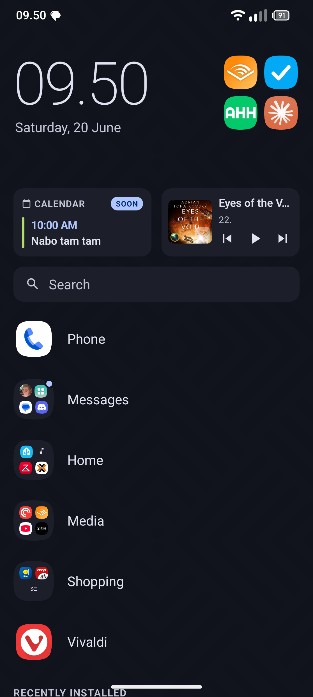
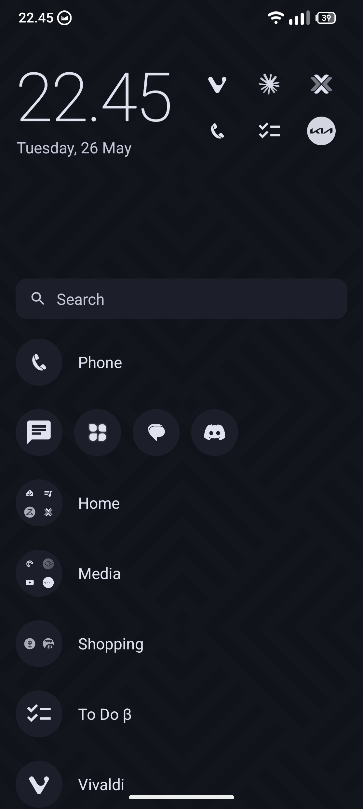
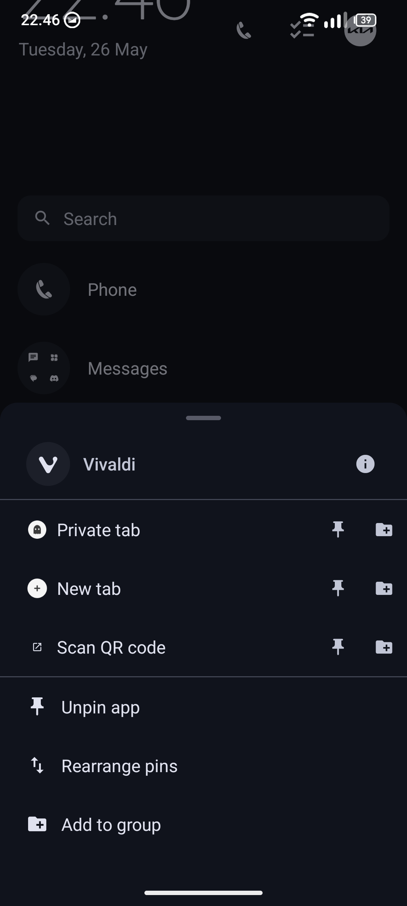
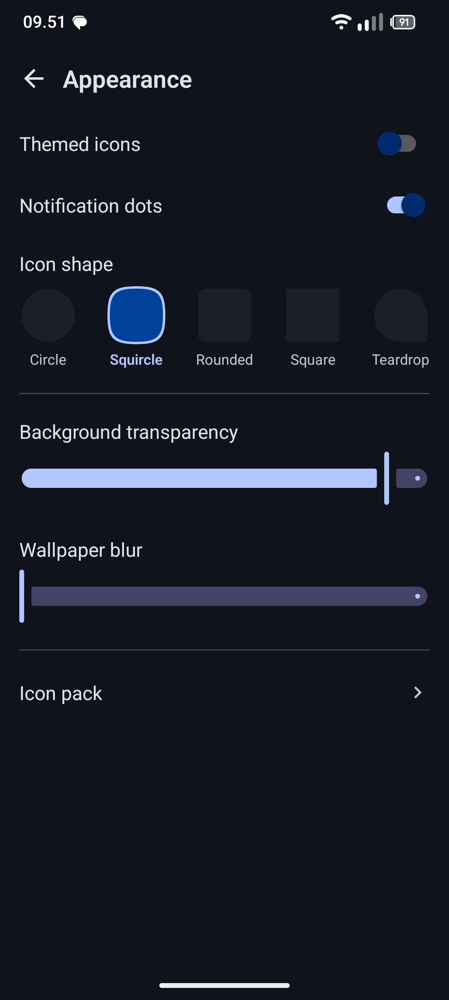
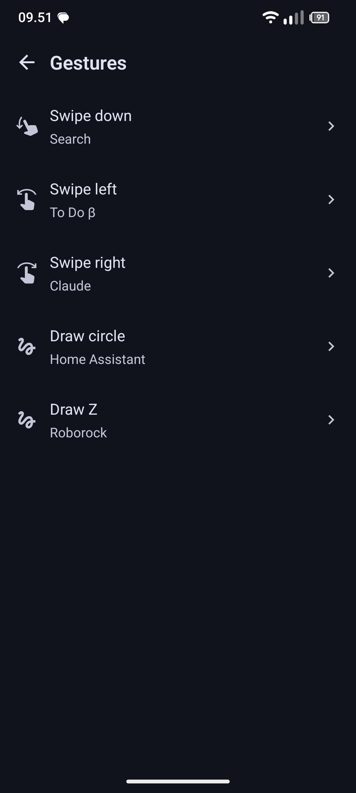

An Android home screen built around the apps you actually open. Pin them, group them, search them, or reach them with a gesture — and nothing else competing for your attention. Everything it knows about you stays on your phone.
Screenshots





What it does
Pinned apps & groups
Pin the apps you actually use and organise them into named groups. Long-press for shortcuts.
App search
Tap the search bar to instantly filter your installed apps by name. It’s fast.
Clock & calendar
A clock at the top, plus an optional card showing your upcoming events at a glance.
Media controls
A compact media card appears when something’s playing — skip tracks without leaving home.
Gestures
Map swipe gestures (down, left, right) and draw gestures (circle, Z) to any app or system action.
Icon shapes
Five shapes to choose from: Circle, Squircle, Rounded, Square, or Teardrop.
Icon packs & themed icons
Supports standard Android icon packs and optionally the system themed icon layer.
Fully private
No ads. No analytics. No tracking. Everything stays on your device.
Privacy
Support
Bug reports, feature requests and anything else: anton@adamsen.io